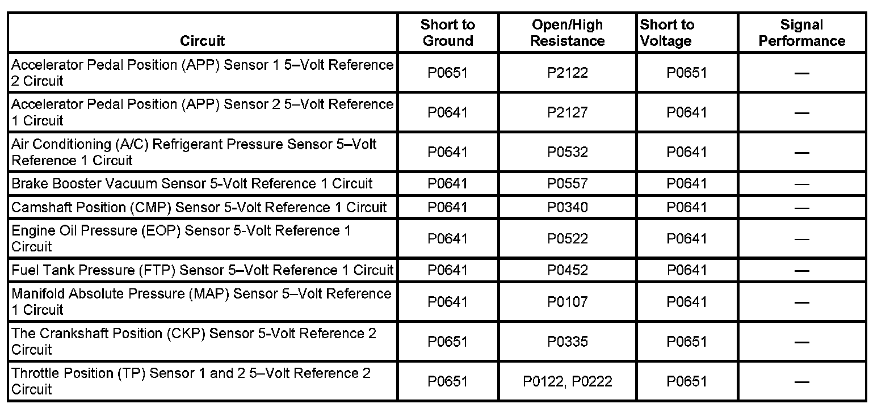

P0641
DTC P0641 or P0651
DTC DESCRIPTORS
DTC P0641
5-Volt Reference 1 Circuit
DTC P0651
5-Volt Reference 2 Circuit
DIAGNOSTIC FAULT INFORMATION

Perform the Diagnostic System Check - Vehicle prior to using this diagnostic procedure. Initial Inspection and Diagnostic Overview
CIRCUIT/SYSTEM DESCRIPTION
The engine control module (ECM) has 2 internal 5-volt reference busses called 5-volt reference 1 and 5-volt reference 2. Each reference bus provides 5-volt reference circuits for more than one sensor. Therefore, a fault condition on one 5-volt reference circuit will affect the other 5-volt reference circuits connected to that reference bus. The ECM monitors the voltage on the 5-volt reference busses.
The 5-volt reference 1 bus provides 5 volts to the following sensors:
- The manifold absolute pressure (MAP) sensor
- The fuel tank pressure (FTP) sensor
- The air conditioning (A/C) refrigerant pressure sensor
- The accelerator pedal position (APP) sensor 2
- The engine oil pressure (EOP) sensor
- The camshaft position (CMP) sensor
The 5-volt reference 2 bus provides 5 volts to the following sensors:
- The APP sensor 1
- The throttle position (TP) sensor 1 and 2
- The crankshaft position (CKP) sensor
CONDITIONS FOR RUNNING THE DTC
- The ignition is in Unlock, Accessory, Run, or Crank.
- The ignition voltage is more than 5.23 volts.
- DTCs P0641 and P0651 run continuously when the above conditions are met.
CONDITIONS FOR SETTING THE DTC
The ECM detects a voltage out of tolerance condition on the 5-volt reference 1 or 2 bus for more than 0.5 second.
ACTION TAKEN WHEN THE DTC SETS
DTCs P0641 and P0651 are Type A DTCs.
CONDITIONS FOR CLEARING THE MIL/DTC
DTCs P0641 and P0651 are Type A DTCs.
CIRCUIT/SYSTEM VERIFICATION
Ignition ON, observe the scan tool 5-volt reference 1 and 2 parameters. The reading should display Circuit OK for a normally operating system.
CIRCUIT/SYSTEM TESTING
IMPORTANT: Additional DTCs may set when disconnecting components.
1. Ignition OFF, disconnect the harness connector of all the sensors connected to the 5-volt reference bus for the applicable DTC. Refer to Circuit/System Description.
2. IMPORTANT: A short to voltage on the signal circuit of certain components may cause this DTC to set.
Ignition ON, test for 4.8-5.2 volts between one of the 5-volt reference circuits and ground.
- If less than the specified range, test all of the 5-volt reference circuits for a short to ground. If all circuits test normal, replace the ECM.
- If greater than the specified range, test for a short to voltage on all of the 5-volt reference circuits, or the signal circuit for each component associated with the appropriate 5-volt reference bus for a short to voltage. If all circuits test normal, replace the ECM.
3. Connect each component associated with the appropriate 5-volt reference bus, one at a time, while monitoring the voltage. The voltage should not change more than 1 volt.
- If the voltage display changes more than the specified range when a component is connected, replace the component.
REPAIR INSTRUCTIONS
Perform the Diagnostic Repair Verification after completing the diagnostic procedure.
- Accelerator Pedal Position Sensor Replacement
- Air Conditioning (A/C) Refrigerant Pressure Sensor Replacement
- Control Module References for ECM replacement, setup, and programming
- Fuel Tank Pressure Sensor Replacement (1500 LWB - 117.3L (31 gal) Tank + E85) Fuel Tank Pressure Sensor Replacement (1500 SWB - 98.4L (26 gal) Tank + E85) Fuel Tank Pressure Sensor Replacement (1500 Series) Fuel Tank Pressure Sensor Replacement (2500 Series)
- Manifold Absolute Pressure Sensor Replacement
- Throttle Body Assembly Replacement
- Engine Oil Pressure Sensor and/or Switch Replacement
- Camshaft Position Sensor Replacement (RPOs LY2/LC9/LY5/LMG) Camshaft Position Sensor Replacement (RPOs LY6/L76/L92)
- Power Brake Booster Vacuum Sensor Replacement
- Crankshaft Position Sensor Replacement. Verification Tests